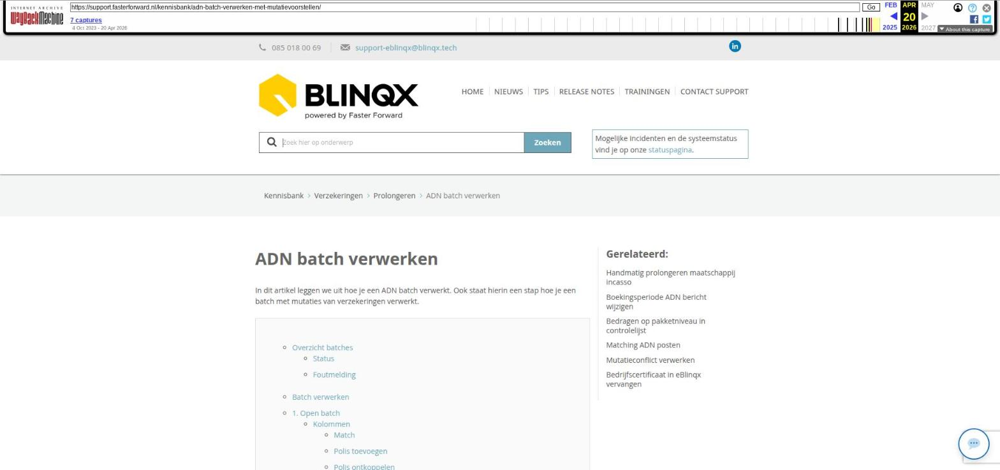

Hypotheek staat ongewenst op vervallen/ is gearchiveerd

Tekstinhoud
Hypotheek staat ongewenst op vervallen/ is gearchiveerd
Met het doorlopen van de workflow wordt de status van de hypotheek bepaald. Gedurende het proces worden onder andere de datums ingevuld van einde tekendatum renteaanbod en einde tekendatum hypotheekaanbod. De workflow reageert hierop.
Is een ingevulde datum verstreken en het getekende aanbod niet ontvangen (of de datum is niet ingevuld!), dan reageert de workflow en wordt de hypotheek als 'niet doorgegaan' beschouwd. De status komt dan op vervallen en de hypotheek wordt gearchiveerd. Ook worden met het archiveren automatisch de workflows en de stukkenlijst verwijderd.
Stappenplan
Volg onderstaand stappenplan om het product te dearchiveren en de status weer op lopend te zetten:
Dearchiveren, het product kan zeer gemakkelijk gedearchiveerd worden. Lees hier verder hoe je de hypotheek weer open kunt zetten.
Vervolgens dient de workflow opnieuw toegevoegd te worden onder de hypotheek. Indien je hiervoor de rechten hebt, kan je dit zelf door in de hypotheek naar het tabblad workflow te gaan. Klik hier op + om een workflow toe te voegen en selecteer de workflow waar je gebleven was in het hypotheekproces. Door hierop te klikken wordt deze gelijk opgestart en kan je de workflow zoals gewend doorlopen.
Let op! Mogelijk is de timer nog actief, vul/pas de datum aan in de productkaart om te voorkomen dat de hypotheek nogmaals gearchiveerd wordt.
Tips
Zoek op waardoor het product gearchiveerd is
Ga naar het product – tabblad communicatie – tabblad registratie – zet systeemregistraties op 'toon' en klik op zoeken. Hierdoor krijg je een overzicht van alle gemaakte registraties. Zoek hier naar een registratie met als onderwerp 'workflow systeem registratie' waarin staat dat de timer afgegaan is. Hierdoor weet je welke timer afgegaan is en wanneer dit gebeurd is.
Zoek op welke workflow voor het laatst actief was
Door bovenstaande stappen te nemen en hier de workflow systeem registraties door te lopen kan je ook achterhalen wat de laatste stap is geweest en wat de actieve workflow was. Zo weet je ook welke workflow er opgestart moet worden.
Laatste update: 15 oktober 2025
Was deze informatie nuttig?
Ja Nee
[Opmerking archivering: dit artikel staat onder drie kennisbankcategorieën: Dossier > Producten dossier, Hypotheken > Hypotheken algemeen, en Dossier > Workflow.]